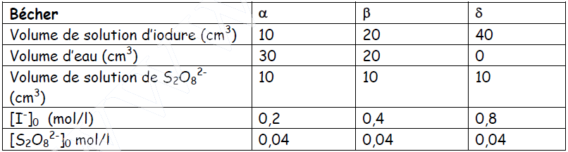
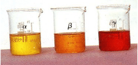
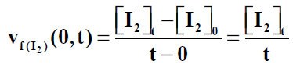
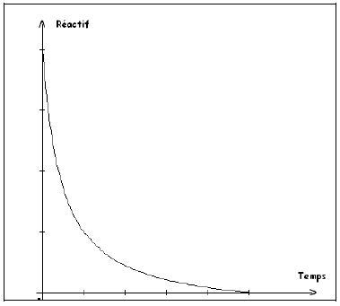
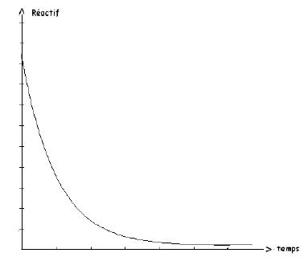
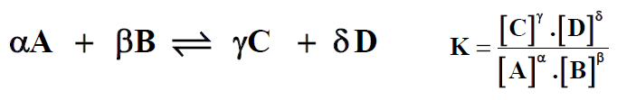
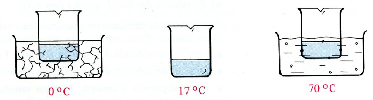
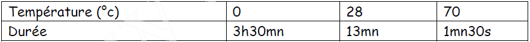

Chapitre II : Facteurs Cinétiques
I - Définition
Les facteurs cinétiques sont les paramètres physiques ou chimiques qui ont une influence sur l’évolution d’une réaction. Les plus importants sont au nombre de trois : Concentration, température et Catalyseur.
Dans ce chapitre, nous allons étudier principalement le rôle des concentrations des réactifs et celui de la température.
II - Influence des concentrations des réactifs
1. Oxydation des ions I- par les ions S2O82-
L’équation-bilan de l’oxydation des ions I- par les ions S2O82- est :
S2O82- + 2I- → 2SO42- + I2
La seule espèce colorée est la molécule de diiode I2 qui confère aux solutions une teinte allant du jaune au brun selon la concentration en I2. L’observation de la coloration nous permet donc de suivre l’évolution de la réaction.
Expérience :
Préparons, à partir d’une solution d’iodure de potassium à 1mol/l, trois solutions plus diluées contenues dans les béchers α, β et δ (Doc 1). A l’instant pris pour instant origine, ajoutons dans chacun de ces trois béchers 10cm3 d’une solution de peroxodisulfate d’ammonium à 0,2 mol/l.


Observation :
A un instant donné, la coloration de la solution δ est plus intense que celle de la coloration β, qui est elle-même plus intense que celle de la solution α (Doc 2). Il s’est donc formé d’autant plus de molécules de diiode que la concentration initiale en ions iodure était grande.
Interprétation :
La vitesse volumique moyenne de formation de I2 entre l’instant origine et l’instant de date t est :

Nous en déduisons que la vitesse volumique moyenne de formation du diiode croit quand la concentration initiale en ions iodure croit.
Conclusion : Les vitesses de disparition des réactifs et de formation des produits d’une réaction augmentent quand les concentrations en réactif augmentent.
2°) Interprétation :
Dans une solution, les molécules et les ions sont en mouvement incessant. Au cours de ces mouvements, des rencontres intermoléculaires se produisent.
Certaines de ces rencontres donnent naissance à de nouvelles entités, tandis que les espèces parents disparaissent.
La vitesse de formation des produits de la réaction est d’autant plus grande que le nombre de ces rencontres est grand.
La probabilité de rencontre entre les molécules de réactifs est d’autant plus grande que le volume de la solution est petit et que le nombre de molécules de réactifs est élevé.
La grandeur qui permet de tenir compte des deux effets n’est autre que le nombre de molécules de réactifs par unité de volume de solution, c'est-à-dire la concentration des réactifs.
- Cas d’une réaction totale :
Dans un milieu donné où se déroule une réaction totale, les réactifs disparaissent, leur concentration diminue, les vitesses de disparition diminuent donc au cours du temps.

Ceci permet d’expliquer l’allure générale de la courbe n = f(t).
- Cas des réactions inverses équilibre chimique :
Soit un milieu dans lequel peuvent se dérouler deux réactions inverses :
A + B → C + D (1) et C + D → A + B (2)
Supposons qu’au moment où on observe le milieu, la réaction (1) se déroule plus vite que la réaction (2).
- La [A] diminue puisqu’il disparaît plus vite (réaction (1)) qu’il se forme (réaction (2)). ; il s’ensuit que la réaction (1) (rapide) voit sa vitesse diminuer (puisque [R] diminue).
- La [C] augmente puisqu’il se forme plus vite (réaction (1)) qu’il disparaît (réaction (2)). La réaction (2) (lente) voit sa vitesse augmenter (puisque C est un réactif de cette réaction et que sa concentration augmente).
- Si la réaction rapide ralentit et la réaction lente accélère, il arrive un moment où la vitesse de disparition de A est égale à sa vitesse d’apparition. A ce moment-là la [ ] n’évolue plus. Les deux réactions inverses se compensent. Tout se passe comme si A n’apparait pas et ne disparait pas. La composition globale du milieu n’évolue plus, on a un équilibre chimique.
On écrit : A + B ⇋ C + D

- Constante d’équilibre :
Lorsque l’équilibre chimique est atteint, il existe une relation entre les concentrations de toutes les espèces chimiques présentes dans le milieu puisqu’elles sont liées par des réactions qui s’équilibrent exactement :

La valeur de K dépend de l’équilibre étudié et de la température.
III - Influence de la température
1°) Expérience :
Oxydation de l’acide oxalique par le permanganate de potassium.
La réaction des ions MnO4- avec l’acide oxalique est une réaction naturelle et totale d’équation-bilan :
2MnO4- + 6H+ + 5H2C2O4 → 2Mn2+ + 8H2O + 10CO2
- Manipulation :
Prenons trios béchers, dans chacun d’eux, versons 30cm3 d’une solution d’acide oxalique 5.10-2 mol/l et quelques gouttes d’acide sulfurique. On place ensuite ces béchers dans des bains-marie de telle sorte qu’une solution soit à la température de 0°C, une autre à 28°C et la dernière à 70°C.

A l’instant t=0, on verse dans chaque bécher 10cm3 de solution de permanganate de potassium 2.10-3 mol/l.
- Observation :
Le temps nécessaire pour que la coloration rose de l’ion MnO4- disparaisse est, pour chaque expérience :

On constate que la durée de la réaction diminue quand la température augmente.
Conclusion et Interprétation :
Une élévation de température correspond à une augmentation de l’agitation de particules (molécules ou ions). Cette plus grande agitation a pour effet d’augmenter le nombre de chocs entre les particules, donc de favoriser la cassure des particules. La réaction se produit alors plus rapidement, sa vitesse augmente.